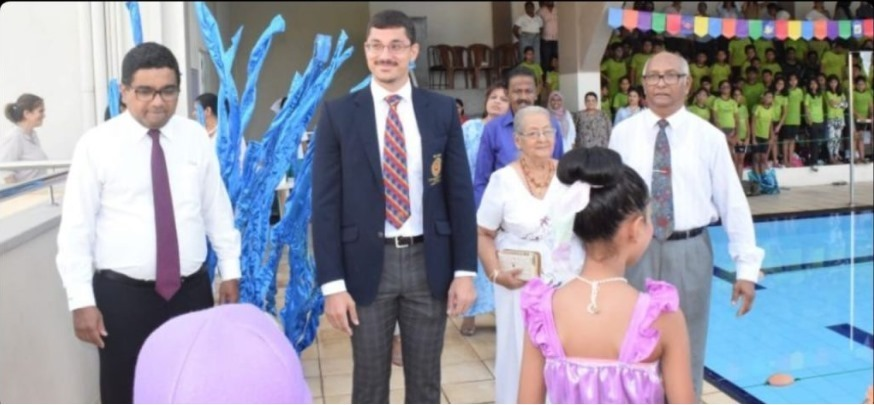

COLOMBO: (ePRESS) – Kyle Abeysinghe, a two-time silver medalist at the Commonwealth Youth Games and a Commonwealth Games finalist, is set to represent Sri Lanka at the 2024 Paris Summer Olympics. Abeysinghe, 24, becomes the third alumnus from Asian International School (AIS) to achieve this honor.
Abeysinghe, the younger brother of double Olympian Matthew Abeysinghe, made a remarkable comeback to national swimming competitions last year after a four-year break due to injury.
Competing for Killer Whale Aquatics, he clinched the national champion title.
He secured his spot at the Paris Olympics with impressive performances at the World Championships in Doha, clocking 50.99 seconds in the men’s 100m freestyle and 23.45 seconds in the 50m freestyle.
Kyle follows in the footsteps of fellow AIS alumni, including his brother Matthew and Kimiko Raheem, who have also represented Sri Lanka in swimming at the Olympics. Out of the 14 Sri Lankan swimmers who have competed in the Olympics, three are from AIS.
Speaking at the AIS Swimming Gala 2024, where he was the chief guest, Abeysinghe expressed his gratitude to his school. “This school taught me a lot. It was the first school I attended after moving to Sri Lanka. I am eternally grateful for all the opportunities and support I received here,” he said. He shared his thoughts on the sport, saying, “Be patient. Don’t rush.
It takes time to see progress. Swimming is a rigorous task at times, but the most memorable part for me has been sharing moments at practice and at competitions with my teammates.”
Abeysinghe also had a message for parents and coaches, emphasizing patience and proper guidance. “We can be tough on kids as coaches because that’s our duty. It’s our responsibility to guide them in the right way. But the most important thing a parent can do is give their children unconditional support, no matter the outcome of their race,” he added.
“Swimming requires a lot of investment, and patience is key to seeing those dividends pay off.”
https://www.facebook.com/61552990697696/posts/122147022818099689/?mibextid=rS40aB7S9Ucbxw6v